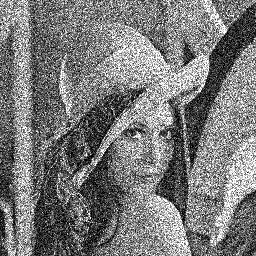
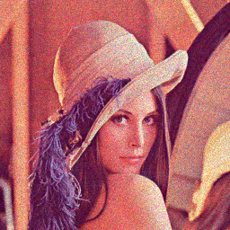
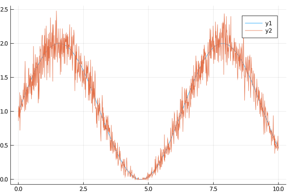

Poisson
Poisson noise originates from the discrete nature of events. For example the dataset could be a microscopy image with very limited intensity (like a flourescent specimen). In this case the probability that one measures a specific number of photons is:
\[P(k) = \frac{\lambda^k \exp(-\lambda)}{k!}\]
where $\lambda$ being the expected value and $k$ the measured one. Our Poisson noise randomly picks values out of this distribution.
Usage
We provide the following method for arrays, Gray images and RGB images.
poisson(X; scaling=1, clip=false)X is the array.
Poisson noise is applied to each array element individually where $\lambda$ is determined by the value itself. However, for example sensors do not measure the number of photons directly but instead some intensity. scaling is a optional argument to connect the intensity to a number of discrete events. For example, usually one can estimate that the highest pixel in the measured data corresponds to 100 photons, in that case you provide scaling=100 to the method. Usually one wants to provide this parameter. If you provide an array which already contains integer numbers which corresponds to the measured discrete events, you can ommit scaling.
Examples
Here some examples with images.
using Noise, TestImages, Images
img_gray = testimage("fabio_gray_256")
img_color = testimage("fabio_color_256")
# the highest intensity corresponds to 10 photons
img_gray_noise = poisson(img_gray, 10.0)
# the highest intensity corresponds to 1000 photons
img_gray_noise_heavy = poisson(img_gray, 1000.0)
img_color_noise = poisson(img_color, 100.0)As it can be seen clearly, the image with more measured photons, is less affected by noise.
| Grayscale with 10 photons at the brightest value | Grayscale image 1000 photons at the brightest value | RGB image with 100 photons at the brightest value |
|---|---|---|
|  |  |
1D Arrays
Poisson noise cannot handle negative occurences by design, therefore the 1D array is a y-shifted sinus curve.
using Noise, Plots
x = LinRange(0.0, 10.0, 1000)
y = 1 .* sin.(x) .+ 1
# small noise
y_noise = poisson(y, 100)
# heavy noise and mean shift
plot(x,y);
plot!(x, y_noise);/home/runner/.julia/packages/GR/RlE5Y/src/../deps/gr/bin/gksqt: error while loading shared libraries: libQt5Widgets.so.5: cannot open shared object file: No such file or directory connect: Connection refused GKS: can't connect to GKS socket application GKS: Open failed in routine OPEN_WS GKS: GKS not in proper state. GKS must be either in the state WSOP or WSAC in routine ACTIVATE_WS
We notice that amount of noise is, in contradiction to additive noise, higher for higher intensity values. However, the signal-to-noise ratio is better for higher intensity values. This was visible in the fabio image. 